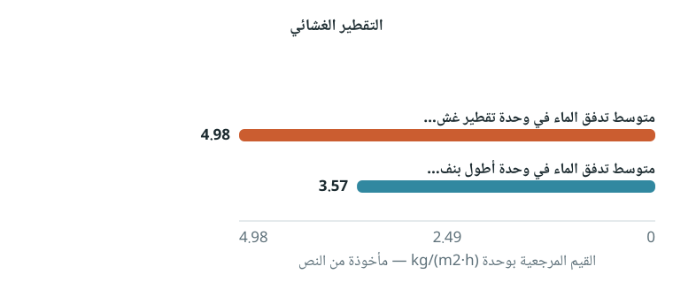

التقطير الغشائي
Membrane distillation
فصل حراري غشائي يمرّ فيه بخار الماء عبر غشاء مسامي كاره للماء مدفوعًا بفرق ضغط البخار الناتج عن فرق حرارة، فلا تعبر الأملاح ولا يحتاج المحلول إلى الغليان.
التقطير الغشائي عملية فصل حراري غشائي: غشاء مسامي كاره للماء يفصل بين محلول ساخن وماء بارد، فيتبخّر الماء عند سطح المسام من جهة المحلول الساخن، ويعبر بخار الماء المسام، ويتكاثف من الجهة الباردة. القوة الدافعة ليست ضغطًا هيدروليكيًّا كما في التناضح العكسي، بل فرق ضغط البخار الناتج عن فرق الحرارة بين الوجهين. والشرط الذي يجعل العملية ممكنة أن يبقى السائل خارج المسام: ما دام فرق الضغط عبر الغشاء أدنى من ضغط دخول السائل، تتكوّن واجهة سائل-بخار عند مدخل المسام ولا يتسرّب محلول. ولذلك لا تعبر الأملاح غير المتطايرة نظريًّا، ولا تحدّ الأسموزية من العملية، فتعمل عند تراكيز عالية تفشل عندها الأغشية الأسموزية. والثمن أن جزءًا من الحرارة يُفقد بالتوصيل عبر الغشاء نفسه ومن خلال البخار، فتنخفض الكفاءة الحرارية، وأن الغشاء الكاره للماء قد يبتلّ فيفقد انتقاءه.
كيف تعمل الظاهرة؟
الآلية ثلاث مراحل متتالية: تبخّر عند واجهة السائل الساخن الملامسة لمدخل المسام، ثم انتقال بخار عبر المسام المملوءة بالهواء، ثم تكاثف على الواجهة الباردة. ولأن الغشاء كاره للماء، لا يدخل السائل المسام ما دام فرق الضغط عبره أدنى من ضغط دخول السائل؛ وعندها تتكوّن واجهة سائل-بخار عند مدخل المسام، وهي موضع التبخّر. وتنتقل الحرارة عبر الغشاء بطريقين متوازيين: حرارة كامنة مع البخار، وحرارة محسوسة بالتوصيل في مادة الغشاء والهواء. الطريق الثاني لا ينتج ناتجًا، فهو الفقد الذي يحدد الكفاءة الحرارية.
العلاقة بالأرقام
التدفق يُقاس بالكيلوغرام لكل متر مربع في الساعة، ويزداد أُسّيًّا مع حرارة التغذية لأن ضغط البخار المشبع يزداد أُسّيًّا بالحرارة. في وحدة شعرية بولي بروبيلين: 4.98 كيلوغرام لكل متر مربع في الساعة عند 55/25 درجة مئوية، و3.57 في وحدة أطول بنفس الألياف، أي نقص 28 بالمئة. وضغط دخول السائل يُحسب بمعادلة يونغ-لابلاس من التوتر السطحي وزاوية التلامس وأكبر قطر مسام؛ وقيَمه المعلنة 1.79 بار لغشاء PEEK بمسام 100 نانومتر، وأكثر من 2.3 بار لغشاء PTFE بمسام 100 نانومتر.
مفاهيم متقاربة
التقطير الغشائي ليس تناضحًا عكسيًّا: التناضح العكسي يدفع الماء بضغط هيدروليكي يتغلب على الضغط الأسموزي، وهنا الدفع حراري والضغط الأسموزي غير مؤثر. وليس تقطيرًا تقليديًّا: لا غليان ولا أبراج ولا ارتداد، والفصل على واجهة مسامية عند حرارة أدنى من الغليان. وليس ترشيحًا تبخيريًّا: الغشاء هنا مسامي والبخار يعبره في طوره الغازي، بينما في الترشيح التبخيري الغشاء كثيف والمكوّن يذوب وينتشر فيه ثم يتبخّر. وليس ترشيحًا دقيقًا: لا فصل بالحجم، بل بالانتقال البخاري.
حدود التطبيق
الحدّ الأول هو الابتلال: إذا تجاوز فرق الضغط ضغط دخول السائل دخل المحلول المسام وانتقل الملح معه وفقد الغشاء انتقاءه، والابتلال يزداد بترسّب الأملاح وبالحرارة لأن التوتر السطحي ينخفض. والحدّ الثاني هو الكفاءة الحرارية: التوصيل عبر الغشاء يفقد حرارة بلا ناتج، وزيادة سماكة الغشاء تقلّل التدفق بنسبة كبيرة دون تحسين يُذكر في الكفاءة عند فروق حرارة عالية. والحدّ الثالث هو أن الأرقام المذكورة من نموذج محقَّق مقابل تجارب منشورة على أغشية بولي بروبيلين محددة، ولا تُعمَّم على كل الأغشية. والحدّ الرابع: لا ادّعاء بقياس أجريناه في هذه المادة.

| الكمية | القيمة | المصدر |
|---|---|---|
| متوسط تدفق الماء في وحدة تقطير غشائي بالتماس المباشر (وحدة MD020CP2N) | 4.98 kg/(m2·h) | [1] |
| متوسط تدفق الماء في وحدة أطول بنفس نوع الألياف (MD080CO2N) | 3.57 kg/(m2·h) | [1] |
| نقص التدفق بسبب سوء توزيع الألياف في الوحدة الأطول | 28 % | [1] |
| ضغط دخول السائل لغشاء PEEK بمسام 100 نانومتر | 1.79 bar | [2] |
| ضغط دخول السائل لغشاء PTFE بمسام 100 نانومتر | >2.3 bar | [2] |
المصادر
- 1 Potential of membrane distillation in seawater desalination: Thermal efficiency, sensitivity study and cost estimation — Journal of Membrane Science (Elsevier) (2008). mp.watereurope.eu/media/publications/1-s2.0-S0376738808005577-main_boZ64HA.pdf · اطُّلع عليه 2026-11-28
- 2 Membranes for the Gas/Liquid Phase Separation at Elevated Temperatures: Characterization of the Liquid Entry Pressure — Membranes (MDPI) (2021). pdfs.semanticscholar.org/6c42/835f9a1fd89120d18bada67ea51ef18c2fd5.pdf · اطُّلع عليه 2026-11-28
استشهد بهذا المصطلح
الصيغتان مبنيتان من بيانات الصفحة نفسها: العنوان والتاريخ ورابط النسخة المنشورة.
التقطير الغشائي — Membrane distillation. (2026). ديوان المعرفة — انفراد. https://infiradev.com/diwan/terms/term-membrane-distillation.html
@misc{term-membrane-distillation2026,
title = {التقطير الغشائي},
titleaddon = {Membrane distillation},
howpublished = {{ديوان المعرفة — انفراد} — مرجع علمي عربي},
year = {2026},
url = {https://infiradev.com/diwan/terms/term-membrane-distillation.html},
urldate = {2026-11-28},
note = {مراجعة علمية: Abdullah Al-Huwaidi}
}
راجعه: Abdullah Al-Huwaidi · 2026-11-28 · آخر تحديث 2026-11-28